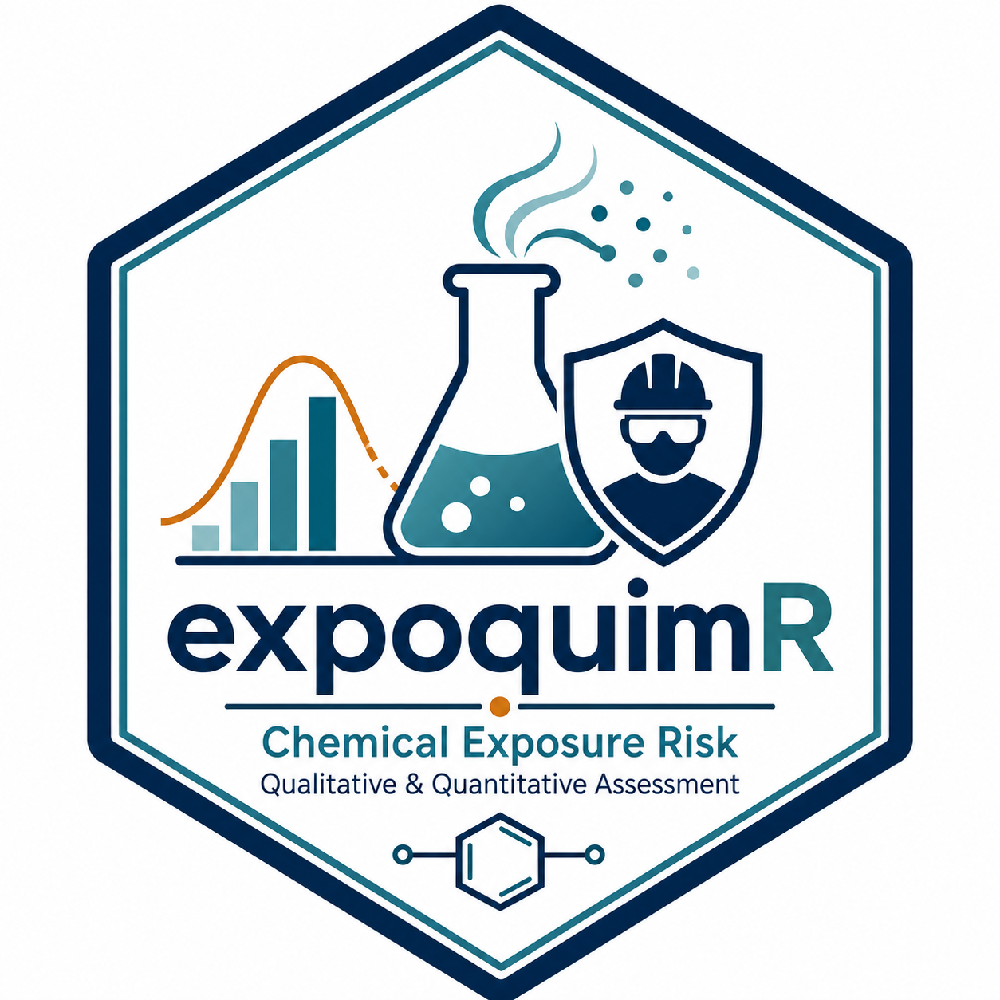

Evaluate a substance using the COSHH Essentials method (high-level wrapper)
Source:R/coshh.R
coshh_evaluate.RdChains coshh_grade(), coshh_classify_volatility() (if applicable),
coshh_risk() and coshh_measures() to produce a complete result row
from the raw data of a substance. Designed to be called directly from code
(scripts, reports, purrr::pmap, vignettes) without going through the
Shiny application.
Usage
coshh_evaluate(
name,
phrases,
quantity,
is_liquid,
boiling_point = NA_real_,
process_temp = NA_real_,
dustiness = NA_character_
)Arguments
- name
Character. Identifying name of the substance.
- phrases
Character. H/R phrases; see
coshh_grade().- quantity
Character. Quantity class in the active language.
- is_liquid
Logical.
TRUEif the substance is liquid (volatility will be calculated fromboiling_point/process_temp);FALSEif solid (dustinesswill be used directly).- boiling_point, process_temp
Numeric. Required only if
is_liquid = TRUE. Seecoshh_classify_volatility().- dustiness
Character. Required only if
is_liquid = FALSE. Dustiness class in the active language.
Value
A one-row data.frame with columns substance, phrases,
grade, volatility, quantity, risk and measures.
Details
Output labels (volatility class, quantity class, control measures) are
returned in the active language; see expoquimr_lang().